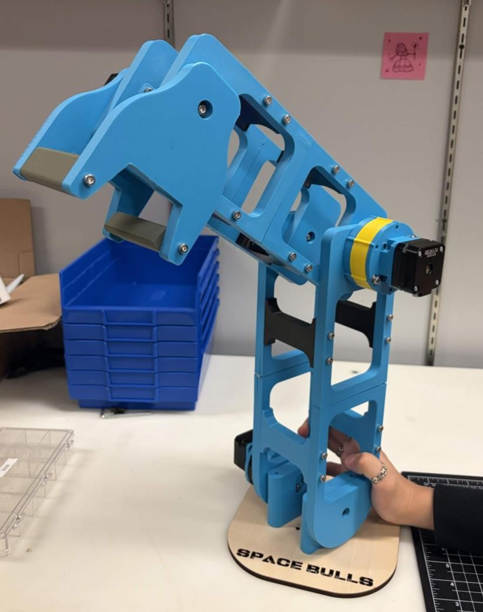

3-DOF Practice Arm
Apr to May 2026Complete
A 3-DOF robotic arm that simplifies our larger competition arm down to its major joints, so the software team can practice on real hardware.


The problem
The year before, our software team had no hardware close to the competition arm, so they got very little practice. We needed a barebones, scaled-down arm they could use to practice programming the joints.
How it works
The arm has three sections. The lower two joints use motors with gearboxes, and the top joint uses a single motor. Each joint connects with screws through ball bearings across from its motor. Arches hold each section together, with a press-fit pin between the two halves.
What I did
I designed the body, the connections to the motors and gearboxes, and a stable mount to the turret. Before modeling anything I planned the specifications, including weight distribution, dimensions, and torque at each joint, and made a DH table for the kinematics. I ran FEA on all the major body parts and removed material where stress was low, and I laid out the joints to eliminate singularities. I assembled the main body, helped assemble the gearboxes, and wired the motors, motor controllers, and Arduinos.
Key decisions
Instead of a miniature 5-DOF arm, we focused on the three major joints to meet a 2-week deadline. I used two beams on each side for structural stability.
Alternatives I considered
One beam per side
A single frame on each side would have been simpler, but not as structurally stable.
Belt and pulley
A timing belt and pulley system is simple, but we wanted to replicate the gearboxes we will most likely use on the 5-DOF arm.
If I returned to it
I would make the arm smaller to take weight off the motors, and refine the tolerances of the press-fit connections.